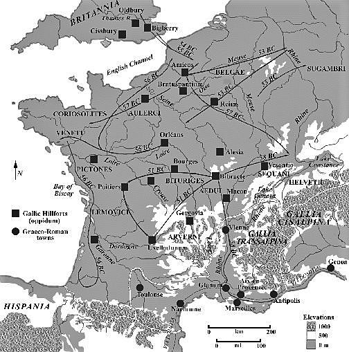

[1] 1 Gallia est omnis divisa in partes tres, quarum unam incolunt Belgae, aliam Aquitani, tertiam qui ipsorum lingua Celtae, nostra Galli appellantur. 2 Hi omnes lingua, institutis, legibus inter se differunt. Gallos ab Aquitanis Garumna flumen, a Belgis Matrona et Sequana dividit. 3 Horum omnium fortissimi sunt Belgae, propterea quod a cultu atque humanitate provinciae longissime absunt, minimeque ad eos mercatores saepe commeant atque ea quae ad effeminandos animos pertinent important, 4 proximique sunt Germanis, qui trans Rhenum incolunt, quibuscum continenter bellum gerunt. Qua de causa Helvetii quoque reliquos Gallos virtute praecedunt, quod fere cotidianis proeliis cum Germanis contendunt, cum aut suis finibus eos prohibent aut ipsi in eorum finibus bellum gerunt. 5 Eorum una pars, quam Gallos obtinere dictum est, initium capit a flumine Rhodano, continetur Garumna flumine, Oceano, finibus Belgarum, attingit etiam ab Sequanis et Helvetiis flumen Rhenum, vergit ad septentriones. 6 Belgae ab extremis Galliae finibus oriuntur, pertinent ad inferiorem partem fluminis Rheni, spectant in septentrionem et orientem solem. 7 Aquitania a Garumna flumine ad Pyrenaeos montes et eam partem Oceani quae est ad Hispaniam pertinet; spectat inter occasum solis et septentriones.
[2] 1 Apud Helvetios longe nobilissimus fuit et ditissimus Orgetorix. Is M. Messala, [et P.] M. Pisone consulibus regni cupiditate inductus coniurationem nobilitatis fecit et civitati persuasit ut de finibus suis cum omnibus copiis exirent: 2 perfacile esse, cum virtute omnibus praestarent, totius Galliae imperio potiri. 3 Id hoc facilius iis persuasit, quod undique loci natura Helvetii continentur: una ex parte flumine Rheno latissimo atque altissimo, qui agrum Helvetium a Germanis dividit; altera ex parte monte Iura altissimo, qui est inter Sequanos et Helvetios; tertia lacu Lemanno et flumine Rhodano, qui provinciam nostram ab Helvetiis dividit. 4 His rebus fiebat ut et minus late vagarentur et minus facile finitimis bellum inferre possent; 5 qua ex parte homines bellandi cupidi magno dolore adficiebantur. 6 Pro multitudine autem hominum et pro gloria belli atque fortitudinis angustos se fines habere arbitrabantur, qui in longitudinem milia passuum CCXL, in latitudinem CLXXX patebant.
[3] 1 His rebus adducti et auctoritate Orgetorigis permoti constituerunt ea quae ad proficiscendum pertinerent comparare, iumentorum et carrorum quam maximum numerum coemere, sementes quam maximas facere, ut in itinere copia frumenti suppeteret, cum proximis civitatibus pacem et amicitiam confirmare. 2 Ad eas res conficiendas biennium sibi satis esse duxerunt; in tertium annum profectionem lege confirmant. 3 Ad eas res conficiendas Orgetorix deligitur. Is sibi legationem ad civitates suscipit. In eo itinere persuadet Castico, Catamantaloedis filio, Sequano, cuius pater regnum in Sequanis multos annos obtinuerat et a senatu populi Romani amicus appellatus erat, ut regnum in civitate sua occuparet, quod pater ante habuerit; 4 itemque Dumnorigi Haeduo, fratri Diviciaci, qui eo tempore principatum in civitate obtinebat ac maxime plebi acceptus erat, ut idem conaretur persuadet eique filiam suam in matrimonium dat. 5 Perfacile factu esse illis probat conata perficere, propterea quod ipse suae civitatis imperium obtenturus esset: 6 non esse dubium quin totius Galliae plurimum Helvetii possent; se suis copiis suoque exercitu illis regna conciliaturum confirmat. 7 Hac oratione adducti inter se fidem et ius iurandum dant et regno occupato per tres potentissimos ac firmissimos populos totius Galliae sese potiri posse sperant.
[4] 1 Ea res est Helvetiis per indicium enuntiata. Moribus suis Orgetoricem ex vinculis causam dicere coegerunt; damnatum poenam sequi oportebat, ut igni cremaretur. 2 Die constituta causae dictionis Orgetorix ad iudicium omnem suam familiam, ad hominum milia decem, undique coegit, et omnes clientes obaeratosque suos, quorum magnum numerum habebat, eodem conduxit; per eos ne causam diceret se eripuit. 3 Cum civitas ob eam rem incitata armis ius suum exsequi conaretur multitudinemque hominum ex agris magistratus cogerent, Orgetorix mortuus est; 4 neque abest suspicio, ut Helvetii arbitrantur, quin ipse sibi mortem consciverit.
[5] 1 Post eius mortem nihilo minus Helvetii id quod constituerant facere conantur, ut e finibus suis exeant. 2 Ubi iam se ad eam rem paratos esse arbitrati sunt, oppida sua omnia, numero ad duodecim, vicos ad quadringentos, reliqua privata aedificia incendunt; 3 frumentum omne, praeter quod secum portaturi erant, comburunt, ut domum reditionis spe sublata paratiores ad omnia pericula subeunda essent; trium mensum molita cibaria sibi quemque domo efferre iubent. Persuadent Rauracis et Tulingis et Latobrigis finitimis, uti eodem usi consilio oppidis suis vicisque exustis una cum iis proficiscantur, Boiosque, qui trans Rhenum incoluerant et in agrum Noricum transierant Noreiamque oppugnabant, receptos ad se socios sibi adsciscunt.
[6] 1 Erant omnino itinera duo, quibus itineribus domo exire possent: unum per Sequanos, angustum et difficile, inter montem Iuram et flumen Rhodanum, vix qua singuli carri ducerentur, mons autem altissimus impendebat, ut facile perpauci prohibere possent; 2 alterum per provinciam nostram, multo facilius atque expeditius, propterea quod inter fines Helvetiorum et Allobrogum, qui nuper pacati erant, Rhodanus fluit isque non nullis locis vado transitur. 3 Extremum oppidum Allobrogum est proximumque Helvetiorum finibus Genava. Ex eo oppido pons ad Helvetios pertinet. Allobrogibus sese vel persuasuros, quod nondum bono animo in populum Romanum viderentur, existimabant vel vi coacturos ut per suos fines eos ire paterentur. Omnibus rebus ad profectionem comparatis diem dicunt, qua die ad ripam Rhodani omnes conveniant. Is dies erat a. d. V. Kal. Apr. L. Pisone, A. Gabinio consulibus.
[7] 1 Caesari cum id nuntiatum esset, eos per provinciam nostram iter facere conari, maturat ab urbe proficisci et quam maximis potest itineribus in Galliam ulteriorem contendit et ad Genavam pervenit. 2 Provinciae toti quam maximum potest militum numerum imperat (erat omnino in Gallia ulteriore legio una), pontem, qui erat ad Genavam, iubet rescindi. 3 Ubi de eius adventu Helvetii certiores facti sunt, legatos ad eum mittunt nobilissimos civitatis, cuius legationis Nammeius et Verucloetius principem locum obtinebant, qui dicerent sibi esse in animo sine ullo maleficio iter per provinciam facere, propterea quod aliud iter haberent nullum: rogare ut eius voluntate id sibi facere liceat. Caesar, quod memoria tenebat L. Cassium consulem occisum exercitumque eius ab Helvetiis pulsum et sub iugum missum, concedendum non putabat; 4 neque homines inimico animo, data facultate per provinciam itineris faciundi, temperaturos ab iniuria et maleficio existimabat. 5 Tamen, ut spatium intercedere posset dum milites quos imperaverat convenirent, legatis respondit diem se ad deliberandum sumpturum: si quid vellent, ad Id. April. reverterentur.